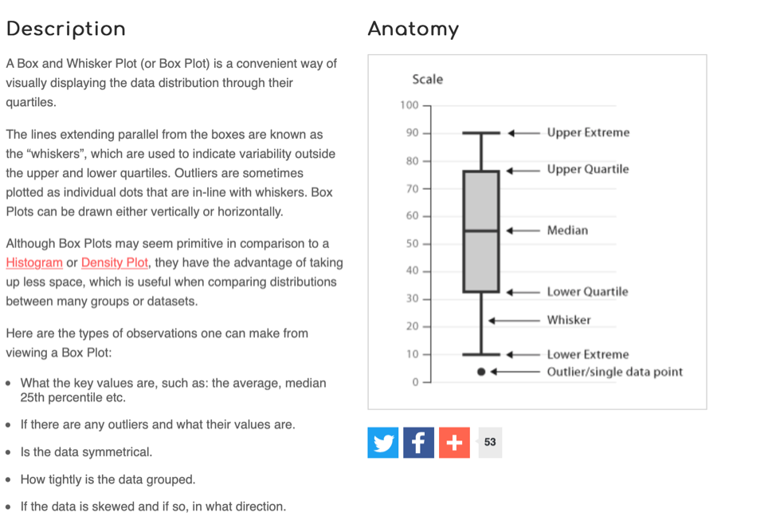

library(tidyverse)2. Descriptive statistics in RStudio
Written by Tom Beesley (2025)
1. Week 2 lecture
Below you will see the embedded lecture videos. As a reminder these lectures in PSYC121 are designed to provide an explanation of the conceptual and computational work involved in some core analytic material. The lab classes are designed (a) to put these ideas into practice (b) to work with R Studio in practicing with data, as a tool that helps you to explore data. So the lectures and lab complement each other, and we will continue to tackle this approach across the module.
Watch Part 1
Watch Part 2
Watch Part 3
Download the lecture slides here
2. Pre-lab work
Last week, among other things, we asked you to
- Roll some dice, carry out some (relatively) straightforward ‘hand’ calculations of central tendency
- Connect to the RStudio server, create a folder and get used to the different “panes”
- Within RStudio upload and run a script (a set of instructions), and explore annotations
- Adapt the script commands to perform calculations on the dice rolls within RStudio
- Complete a survey so that we can collect data for analysis teaching
Your progress was great! We start with small steps and build up - but this is a nice start and as staff we’re pleased how things went!
Before the lab, make sure you have worked through the material in the week2 learnr tutorial. The link is here
Lab activities
R Studio recap and setup
For a reminder of how to start RStudio, see week 1’s instructions
(remember: off campus, you will need to be on the VPN)
A word of advice (from David Howell’s statistics book: One more word of advice I can’t resist adding what is perhaps the best advice I have. If there is something that you don’t understand, just remember that “Google is your friend.” She certainly is mine. (Well, maybe Google is getting a bit pushy, but there are many other search sites.) If you don’t understand what Fisher’s Exact Test is, or you don’t like my explanation, go to Google and type in Fisher’s Exact Test. I just did that and had 260,000 hits. You can’t tell me that there isn’t going to be something useful in there.)
In week 1, we had a tiny dataset (relatively speaking) that we entered into R through a script line. That worked for what is was. But it’s going to become painful and tedious when (a) we want to work with larger datasets (b) we have data more complex than a 1-dimensional list of numbers (think about some 2-dimensional data sheets you might have encountered in excel for example)
R can handle data files, and this week we’re going to explore them. Within R, we can specify ‘data frames’ which can have, essentially, multiple columns of data, and we can link data files to data frames for processing
To make things straightforward, each week we’ll provide students with a “zip” file that contains the script to start from (which you can expand and annotate etc, and save on your file space). We’ll also provide a data file(s) for you to use in the zip file. R can then import these files into the RStudio environment. So when you upload the zip file, you can import the data AND you can open up the script
Working with multiple columns
Some years ago, a large group of participants gave an estimate of the weight of Penelope the cow. Just over 17,000 guesses. And the distribution of guesses was something like this: 
What we can see from this graph is that:
- Guesses formed a roughly normal distribution. There is a bit of a skew with a right-hand tail, but this is inevitable as a weight of less than 0 is physically impossible, but there is no limit of the semantics of a large guess.
- The mean guess weight (1,287 lbs) is very close to the actual (true) weight of the cow (1,355 lbs). So even though lots of people were inaccurate, a central tendency measure has a pretty good alignment with the true weight. This is known as the Wisdom of Crowds phenomenon, first identified by Galton in 1907 (though he suggested using the median weight). The concept of the wisdom of crowds continues to be used and investigated in psychology today (see for example here and here)
Let’s look at (a sample of) the PSYC121 student data collected on guessing the weight of Penelope, and ask whether it resembles the properties of this large dataset.
Create a folder and set the “working directory”
Last week you should have created a “PSYC121” folder. This week, we’ll organise our work a little more. Follow these steps to organise your scripts and data:
- Within the PSYC121 folder, create a “Week_1” folder and a “Week_2” folder (you don’t have to use the underscores, but it’s good practice)
- Move the Week 1 script (the .R file) into the Week 1 folder. To do this, tick the box next to the Week 1 R file, select “More” and then “Move”. Find the Week 1 folder and select it.
- Navigate to the Week 2 folder and set it as the “working directory”. To do this, click “More” and “Set as Working Directory”. What does this mean? Well, RStudio is a bit unusual, in that you need to tell it where you want to work. So even if you navigate to a different directory, RStudio doesn’t assume that’s where it should look for files. So when you’re sure you’re in the correct folder you want to work in, make sure you Set as Working Directory.
- Download and then upload the zip file into RStudio. You’ll remember from last week that we need to download the zip file from this page and then upload it into [RStudio]. This week we’re using a file named
week_2_2025.zip. Click on this link to download the zip file. Follow the same process as last week to achieve this step.
Library() and read_csv()
Let’s start working with our data, by opening up (clicking on) the script “Week_2.R” file.
The first command is to load a library of functions:
To run this, simply click anywhere on line 1 of the R script to put the cursor there, and press ctrl+enter (cmd+enter on a mac) or click the button called run. You will see a number of messages appear in the console. Don’t worry about these, or worry too much about what exactly this command is doing. Essentially this is giving us some useful tools for our analysis. We will introduce the features of the tidyverse gradually during this course.
If you have followed all the instructions to this point, you should see a “csv” file in the Week 2 folder. “csv” is a filetype that means “comma separated values” - it’s a very typical way to store data in very small files. While the data exist in this file, we actually need to get them into an R object so we can explore the data on the RStudio server. To do this, run the next line of code:
cows <- read_csv("penelope22.csv")What this command accomplished was to read the data file called ‘penelope22.csv’ into an object in R called cows. You could use any object label - it doesn’t have to be ‘cows’- but it’s important to then keep that alternate name consistent in what you do next.
We can use the following command to view the data in the spreadsheet format:
View(cows)This presents the data in a window of RStudio. As you look through the data, note that “NA” means not available or missing data. Does this file structure start to make some sense to you?
Finding the mean and median estimates
Use the data to answer the following questions…
- What is the mean weight estimates?
- What is the standard deviation of the estimates?
- What is the median weight of the estimates?
- Which of these central tendency measures is the more accurate measure of the true cow weight? (make a judgement)
- What is the mean weight estimate (and standard deviation) for female respondents and non-female (male / non-binary /prefer not to say) respondents?
You may be thinking, how do I possibly do any of this?! Well this week most of the commands you need are contained in the R script you have downloaded. Also, remember from last week, we explored the R command:
mean(week_1_lecture_data)That gave us the mean of the small dataset week_1_lecture_data. This time, we want to explore the penelope dataset. But also, the lecture_data was just a single list of numbers. The penelope22 object is a 2D datasheet: it has rows and columns. So we need to tell R Studio which column we are interested in. RStudio uses the format object_name$column_name. So run the following lines in the script:
mean(cows$estimate) sd(cows$estimate)So from this, can you work out what you would do to get the median value? Part of the command is given to you, can you change the text so that it works?
Calculations from a range of columns
We have seen that:
mean(cows$estimate) will provide a mean of the column “estimate”. In the third column, named “female_estimate”, we have the estimates of just the female respondents. In the fourth column, named “other_estimate”, we have the estimates of the “other” respondents (i.e., males and non-binary and those that prefer not to say).
Can you now figure out how you might get information about the estimate from the female data (only) or the non-female data? Try this out and compare with others on your table to check you are getting the same answers. You will certainly find that the result of the this command produces an “NA” result. This means that the answer is “Not Available”, or in other words, is a “missing value”. This is because some of the values in this column are NA, and the mean of a column with NAs will always lead to the result NA.
But thankfully there is a solution. Try changing the script so it looks like this:
mean(cows$female_estimate, na.rm = TRUE )Any different? The na.rm = TRUE instruction tells RStudio that missing data can be ignored in this mean calculation. (in technical language, na.rm is a parameter of the function mean that removes the NAs if set to TRUE)
Simple graphs
RStudio can be used to create graphical data plots that can help interpret datasets
The first thing we can do is create a histogram distribution of guesses from the sample student data to compare with the previous large sample study (i.e. the 17,000 guesses):
hist(cows$estimate)One way to alter or adjust the histogram is to change the width of the bars, the intervals, between each plot section. Try run this line from the script
hist(cows$estimate, breaks = *MISSING*)Does it work? No? What you need to do is replace the two question marks in the script (or better still, create a new instruction line in which you amend this to have a numerical value representing the number of different plot bars. Try at least 3 different values. Look at and think about how this affects the visual distribution.
We can also create a “box and whisker plot”. Here’s a general simple description of a box-and-whisker plot as a graphical representation of data:

3.4. Extension and practice. Apply your new skils to a different dataset
In the zip file, we also provide data on the estimates of the percentage of immigrants in the UK. This will allow you to explore this variable, create visualisations of the data and its spread. We’ll be looking at a version of this variable in week 3: but for now, can you apply the analysis of the penelope data to the immigration data (report descriptive statistics)? Write some new script lines to investigate this additional dataset, and annotate those new script lines.